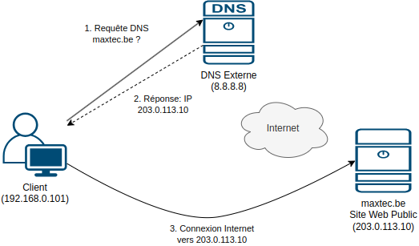
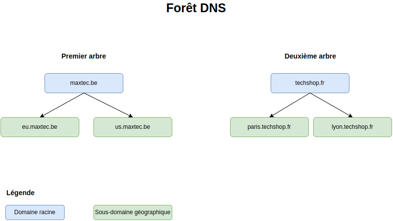
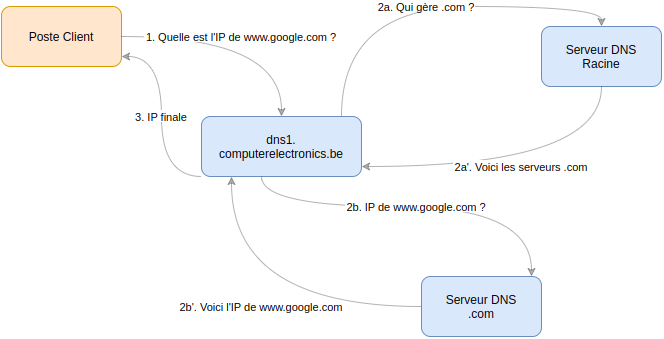
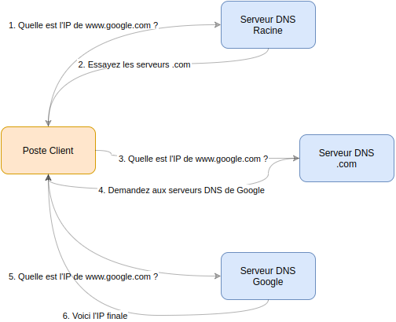

Annexe A: DNS - Concepts Avancés (Référence)
🧭 Navigation
🏠 Retour au Syllabus | 📖 Chapitre 3: DNS Préparation | 💻 Chapitre 4-bis: DNS Pratique
📚 À propos de cette annexe:
Ceci est une ressource de référence avancée pour approfondir vos connaissances DNS au-delà des labs pratiques.
📋 Parcours recommandé: 1. ✅ Complétez d'abord le Chapitre 3: DNS Préparation 2. ✅ Installez Active Directory (Chapitre 4) 3. ✅ Complétez les Labs DNS Pratiques (Chapitre 4-bis) 4. 📖 Ensuite, consultez cette annexe pour la théorie approfondie
🎯 Public cible: Étudiants avancés, admins expérimentés, ou pour consultation/révision
📙 Contenu de cette Annexe
Cette annexe couvre en détail: 1. 🌐 Principes fondamentaux DNS 2. 🔄 Processus de résolution (récursive vs itérative) 3. 🏗️ Architecture DNS (zones, délégation, forêts) 4. 📝 Configuration avancée DNS dans Windows Server 5. 🔍 Enregistrements DNS spécialisés 6. 🌍 Structures multi-sites et géographiques
1. Le service DNS
Le DNS (Domain Name System) est un service fondamental qui agit comme l'annuaire téléphonique de l'internet (on ne parle pas de l'annuaire tel que base de données d'Active Directory!). Il transforme les noms de domaine en adresses IP et vice versa. Il est essentiel pour deux raisons principales :
| Aspect | Description | Exemple |
|---|---|---|
| 🌐 Internet | Permet de naviguer sur internet en utilisant des noms au lieu d'IPs | www.google.com → 142.250.179.174 |
| 🏢 Active Directory | Sert de base pour notre infrastructure Active Directory | dns1.maxtec.be → 192.168.0.2 |
💡 Pour débutants: Pensez au DNS comme l'annuaire téléphonique d'internet. Au lieu de mémoriser
142.250.179.174, vous tapezgoogle.com!Point clé: Sans DNS, nous devrions mémoriser les adresses IP de chaque service et ordinateur!
Le DNS offre deux types de résolution :
- 📝 Directe : Nom → IP (www.google.com → 142.250.179.174)
- 🔄 Inverse : IP → Nom (142.250.179.174 → www.google.com)
💻 Exercice Pratique: Explorer le DNS
Objectif: Comprendre comment le DNS fonctionne dans votre environnement
📙 Instructions
1. 🖥 **Préparation:** - Ouvrez une console PowerShell ou CMD - Assurez-vous d'être connecté à Internet 2. 🔍 **Tests de résolution DNS:** ```powershell # Test d'un domaine public ping -4 www.google.com # Test de notre futur domaine ping -4 maxtec.be ``` 3. 🧐 **Analyse:** - Observez les adresses IP retournées - Notez les différences entre les réponses - Réfléchissez aux raisons des échecs > **Note:** L'option `-4` force l'utilisation de l'IPv4Exemple de resolution inverse sous Windows
Imaginons que vous souhaitez connaître le nom de domaine associé à l'adresse IP 8.8.8.8 (serveur DNS public de Google). Voici comment faire une résolution inverse sous Windows :
- Ouvrez l'invite de commandes (CMD) ou PowerShell.
- Tapez la commande suivante :
powershell nslookup 8.8.8.8 - Analysez le résultat :
Vous verrez une réponse similaire à :Nom : dns.google Address: 8.8.8.8Cela signifie que l'adresse IP8.8.8.8correspond au nom de domainedns.google.
💡 À tester aussi : Essayez avec l'adresse IP de votre serveur DNS interne (par exemple
192.168.0.2) une fois qu'il sera configuré (fin chapitre 3)
🎯 Checkpoint: Concept DNS de Base
Avant de continuer, assurez-vous de comprendre:
- [ ] Pourquoi on utilise des noms au lieu d'adresses IP
- [ ] Pourquoi maxtec.be ne répond pas encore
2. Processus de Résolution DNS
🔍 Comment fonctionne la résolution DNS?
Point clé: Le processus de résolution DNS diffère selon que la ressource est interne (une poste de travail cherche une ressource locale) ou externe (on essaie de se connecter au réseau depuis l'extérieur - l'Internet)
🌐 Résolution DNS Externe
💡 Conseil: C'est quand quelqu'un de l'extérieur essaie de se connecter à notre entreprise

| Étape | Action | Détails |
|---|---|---|
| 1️⃣ | Requête Client | Le client (extérieur) demande l'IP de maxtec.be |
| 2️⃣ | DNS Public | Consultation des serveurs DNS publics |
| 3️⃣ | Réponse | Le serveur envoie au client l'IP publique |
| 4️⃣ | Connexion | Le client se connecte via Internet |
🏛️ Résolution DNS Interne
💡 Conseil: C'est quand nos employés utilisent leurs ordinateurs au bureau
| Étape | Action | Détails |
|---|---|---|
| 1️⃣ | Requête Client | Un poste de travail (interne) demande l'IP d'une ressource locale |
| 2️⃣ | Réponse DNS | Notre serveur DNS interne (dns1.maxtec.be) fournit l'IP |
| 3️⃣ | Connexion | Le poste de travail se connecte directement à la ressource à l'intérieur du réseau |
3. L'Espace de Noms DNS
Un espace de noms DNS est l'ensemble de noms DNS organisés sous la forme d'un arbre DNS, une structure hiérarchique où chaque nœud est un domaine (ici: maxtec.be, eu.maxtec.be, us.maxtec.be).

🏢 Structure DNS de Maxtec
| Niveau | Description | Exemples |
|---|---|---|
| 🌐 Domaine Racine | Domaine principal | maxtec.be |
| 🌎 Zones Géographiques | Régions | eu.maxtec.beus.maxtec.be |
| 💻 Ressources | Appareils et services | ws-compta-01.maxtec.beprinter-01.maxtec.be |
🌲 Forêts DNS
Un forêt DNS est un espace de noms avec plusieurs arbres.
Exemple de fusion d'entreprises:
- 🇪🇺 maxtec.be (Premier arbre)
- 🇫🇷 techshop.fr (Deuxième arbre)
Chaque arbre garde son indépendance tout en permettant une collaboration entre les entreprises.

Dans notre cas du labo on a une forêt d'un arbre (maxtec.be).
💡 Pour débutants: Pour ce cours, nous avons une structure simple avec un seul arbre. Les grandes entreprises peuvent en avoir plusieurs.
📑 Cas Pratique: Maxtec
Maxtec est une entreprise internationale avec: - 🇪🇺 Opérations en Europe - 🇺🇸 Opérations aux États-Unis
Organisation DNS
Voici l'arbre DNS de Maxtec, on voit aussi l'ensemble des sous-domaines et les ressources (ordinateurs, imprimantes, etc)
💡 Avantages de cette structure
- 🌐 **Séparation Géographique** * Meilleure gestion du trafic réseau * Répartition logique des ressources - 🛠️ **Séparation des Environnements** * Sécurité renforcée - 💻 **Gestion des Ressources** * Organisation claire * Maintenance simplifiée📍 Structure DNS Hybride
Point clé: Notre infrastructure utilise une approche hybride pour optimiser la gestion des ressources: structure plate et hiérarchique. Voici l'explication:
💻 Structure Plate (Flat DNS)
Observez que les sous-domaines (eu, usa) ne sont pas utilisés pour les postes de travail et imprimantes
Au lieu de
ws-compta-01.eu.maxtec.be
printer-rh-01.usa.maxtec.be
on aura
ws-compta-01.maxtec.be
printer-rh-01.maxtec.be
C'est fait exprès: si on utilise le nom du sous-domaine on devrait gérer des certificats SSL pour chaque ressource et on ne veut pas le faire! C'est une approche professionnelle standardisée.
Les sous-domaines sont utilisés uniquement pour les serveurs et services (observez les adresses)
# Pour les serveurs et services
auth.eu.maxtec.be
4. Les Zones DNS
📍 Qu'est-ce qu'une Zone DNS?
Une zone DNS est tout simplement une partie de l'espace de noms DNS (une partie de l'arbre DNS) contenant les enregistrements d'un domaine spécifique.
🛠️ Architecture DNS Centralisée
Note: Pour un environnement de formation ou une petite/moyenne entreprise, un seul serveur DNS (
dns1.maxtec.be) maître avec réplication est suffisant. Dans de plus grandes infrastructures, on pourrait avoir des serveurs DNS spécialisés par zone, mais on n'en a pas besoin dans notre cas.
| Serveur | Rôle | Fonction |
|---|---|---|
| 🖥 DNS1 | Primaire | - Maître pour toutes les zones - Gestion des mises à jour |
| 💻 DNS2 | Secondaire | - Réplication automatique - Redondance et charge |
✨ Avantages de la Division en Zones
📑 Organisation Logique
- 🌐 Séparation par région (EU, US) - 🛠️ Séparation par environnement (DEV, PROD) - 💻 Gestion claire des ressources🔒 Sécurité
- 📜 Politiques par zone - 🔐 Contrôle d'accès granulaire - 🔑 Isolation des environnements📈 Performance
- 🌍 Optimisation du trafic - 📊 Répartition de charge - 📉 Redondance améliorée🏛️ Structure du Réseau
Note: Ce diagramme est hybride - il montre à la fois: - 💻 La structure logique (zones DNS, sous-domaines) - 🖥 L'organisation physique (répartition géographique, adressage IP)
Bien que les ressources soient physiquement réparties entre l'Europe et les États-Unis, la gestion DNS reste centralisée sur notre serveur principal dns1.maxtec.be.
5. Analyse des Zones DNS
🌲 Structure Hiérarchique
Point clé: Notre infrastructure DNS utilise une hiérarchie logique à plusieurs niveaux, mais avec une gestion centralisée
🌐 Niveau Racine (maxtec.be)
| Type | Description |
|---|---|
| 💻 Postes | Directement sous la racine (structure plate, les noms n'incluent pas .eu ni .us: ws-compta01.maxtec.be) |
| 🖥 Serveurs | Dans les sous-domaines (structure hiérarchique) |
| 🔑 Gestion | Centralisée sur dns1.maxtec.be |
🌎 Sous-domaines Géographiques
| Type | Sous-domaine | Usage |
|---|---|---|
| 🇪🇺 Europe | eu.maxtec.be |
Opérations européennes |
| 🇺🇸 USA | us.maxtec.be |
Opérations américaines |
💡 Point Important: La structure DNS est une organisation logique qui peut être totalement indépendante de l'emplacement physique des ressources.
6. Structure Physique vs Logique
🌳 Structure Logique (DNS)
Structure de noms (domaines et sous-domaines, ressources)
- Domaine racine: maxtec.be
-
Sous-domaines géographiques: eu.maxtec.be, us.maxtec.be
-
Ressources: ws-compta-01.maxtec.be, printer-rh-01.maxtec.be
💡 Note: La structure logique (DNS) permet d'organiser les ressources indépendamment de leur emplacement physique (IP)
🏗️ Structure Physique (IP)
Elements physiques (machines) ayant leurs IPs.
- Infrastructure: 192.168.0.0/24 (dns1, dns2)
- Zone EU: 192.168.10.0/24 (postes EU, services EU)
- Zone US: 192.168.20.0/24 (postes US, services US)
7. Autorité DNS
📚 Définition: Un serveur DNS a l'autorité sur un espace de noms quand il possède les informations nécessaires pour répondre directement aux requêtes.
🔑 Serveur DNS avec Autorité
| Serveur | Zone d'Autorité | Sous-domaines |
|---|---|---|
dns1.maxtec.be |
maxtec.be |
✔️ |
dns2.maxtec.be |
maxtec.be |
✔️ |
Un serveur DNS ayant autorité sur un espace de nom :
🔑 Caractéristiques d'un Serveur avec Autorité
💻 Réponses Directes
| Action | Description | Exemple | |--------|-------------|----------| | ✅ Réponse Positive | Renvoie l'IP immédiatement | `ws-compta-01 → 192.168.10.128` | | ❌ Réponse Négative | Erreur si nom inexistant | `invalid-host → NXDOMAIN` | | ⏱️ Performance | Réponse instantanée | Données en cache local |🔍 Gestion des Requêtes
- 💾 **Données Locales**: Toutes les informations stockées localement - 🔗 **Pas de Récursion**: Aucune consultation d'autres serveurs - ⏳ **Réponse Rapide**: Accès direct aux données🔎 Serveur DNS sans Autorité
💡 Note: Un serveur sans autorité doit obtenir l'information d'autres sources via deux types de requêtes:
Types de Requêtes
- 🔍 Requêtes Récursives
- Le serveur fait tout le travail de recherche
- Retourne une réponse complète au client

💻 Exemple de Requête Récursive
📡 Scénario: Résolution de www.google.com
| Étape | Action | Détails | |---------|---------|----------| | 1️⃣ Client | `ws-compta-01` demande l'IP | Envoie requête à `dns1` | | 2️⃣ DNS1 | Vérifie ses zones | Pas d'autorité sur google.com | | 3️⃣ DNS1 | Contacte d'autres serveurs | Cherche les serveurs racine | | 4️⃣ DNS1 | Obtient l'IP finale | Récupère 142.250.x.x | | 5️⃣ DNS1 | Répond au client | Renvoie l'IP trouvée |💡 Points Clés
- Client
- 🔍 Une seule requête
-
⏳ Attend la réponse finale
-
Serveur DNS
- 💻 Gère toute la résolution
- 🔗 Contacte d'autres serveurs si nécessaire
- 💾 Met en cache les résultats
- Il fait toutes les requêtes nécessaires lui-même
- Le client n'a rien à faire de plus
🔍 Requêtes Itératives
💡 Définition: Dans une requête itérative, chaque serveur renvoie la meilleure référence possible vers la réponse.

Exemple de requête itérative :
- Le client demande l'IP de www.google.com à un serveur DNS
- Le serveur répond : "Je ne sais pas, essayez les serveurs DNS qui gèrent .com"
- Le client demande l'IP aux serveurs .com
- Les serveurs .com répondent : "Demandez aux serveurs DNS de Google"
- Le client demande l'IP aux serveurs DNS de Google
- Les serveurs DNS de Google répondent avec l'IP finale
Points clés des requêtes itératives :
- Le serveur DNS qui ne connaît pas la réponse renvoie une référence vers d'autres serveurs
- Le client doit faire plusieurs requêtes successives
- Chaque serveur aide à se rapprocher de la réponse finale
- Plus complexe pour le client mais moins de charge sur les serveurs
Détail d'une requête DNS sans autorité
Voici, plus en détail, la suite d'opérations pour chercher l'IP d'un serveur DNS sans autorité:
- Chercher dans la cache DNS : Si l'IP a déjà été résolue récemment
- Réponse immédiate sans autre requête
-
Valide jusqu'à expiration du TTL (Time To Live)
-
Transmettre la requête au redirecteur (forwarder) : Si configuré
- Transmet la requête à un autre serveur DNS (souvent celui du FAI)
- Attend une réponse récursive complète
-
Plus simple que la résolution itérative
-
Lancer une Résolution Itérative : En dernier recours
- Interroge les serveurs DNS racine
- Suit les références de serveur en serveur
- Processus plus complexe mais plus autonome
📝 Exercice: Analyse d'Autorité DNS
Objectif: Comprendre quand un serveur DNS a l'autorité sur une requête.
📓 Instructions
Analysez comment dns1.maxtec.be répondra aux requêtes suivantes:
ws-compta-01.maxtec.be(poste de travail)www.google.com(site externe)fileserver.us.maxtec.be(serveur de fichiers US)
Pour chaque cas: - Indiquez si dns1 a l'autorité - Expliquez le processus de résolution
🔧 Solution
##### 💻 Requête Interne (ws-compta-01)✅ Avec Autorité
- Zone: maxtec.be
- IP: 192.168.10.128
- Réponse: Directe et immédiate
❌ Sans Autorité
- Cache ? → Réponse rapide
- Sinon → Redirecteur (FAI)
- Ou → Résolution itérative
✅ Avec Autorité
- Zone: us.maxtec.be
- IP: 192.168.20.10
- Réponse: Directe (zone déléguée)
8. Délégation DNS
💡 Définition: La délégation DNS permet de distribuer la gestion des zones DNS entre différents serveurs de manière hiérarchique.
🌐 Architecture Multi-niveaux
🌍 Niveau Internet (DNS Public)
| Composant | Rôle | |-----------|-------| | 📝 Registrar | Gère `maxtec.be` | | 💻 DNS Public | Pointe vers nos serveurs | | 🌎 Services | Site web, email, etc. |# Exemple d'enregistrements publics
maxtec.be. NS ns1.registrar.com
www.maxtec.be A 203.0.113.10
🏛️ Niveau Entreprise (DNS Interne)
| Zone | Serveur | Rôle | |------|---------|-------| | Racine | `dns1` (192.168.0.2) | Primaire | | Racine | `dns2` (192.168.0.3) | Secondaire | | EU | `dns.eu` (192.168.10.2) | Services EU | | US | `dns.us` (192.168.20.2) | Services US |# Structure de délégation interne
maxtec.be → dns1, dns2
eu.maxtec.be → dns.eu
us.maxtec.be → dns.us
Cette configuration sera faite dans le contexte d'Active Directory.
dns1.maxtec.beest configuré comme serveur autoritaire pour l'ensemble du domaine-
Les zones géographiques et d'environnement sont configurées dans le serveur dns1 ainsi, dans un fichier de configuration DNS :
# Configuration des zones géographiques : eu.maxtec.be. IN NS dns1.maxtec.be. us.maxtec.be. IN NS dns1.maxtec.be.Nous allons voir plus tard les enregistrements de zone (IN, NS, etc.). -
Chaque ligne délègue la gestion d'un sous-domaine à ce serveur DNS
- Les services utiliseront ces sous-domaines (ex:
fileserver.eu.maxtec.be)
9. Zones Secondaires
💡 Définition: Une zone secondaire est une copie en lecture seule synchronisée d'une zone principale.
🔍 Caractéristiques Principales
💻 Architecture
| Aspect | Description | |--------|-------------| | 📚 Données | Copie exacte de la zone principale | | 🔄 Synchronisation | Automatique via transfert de zone | | 🔒 Permissions | Lecture seule uniquement |✨ Bénéfices
1. **Haute Disponibilité** - 🛡️ Redondance en cas de panne - 💻 Basculement automatique 2. **Performance** - ⚖️ Répartition de charge - 📡 Proximité géographique 3. **Sécurité** - 🔐 Protection des données principales - 🛡️ Isolation des modifications💻 Exemple: Infrastructure maxtec.be
# Configuration des zones
Primaire: dns1.maxtec.be (192.168.0.2)
Secondaire: dns2.maxtec.be (192.168.0.3)
# Transfert de zone
Type: Incrémental
Fréquence: 15 minutes
Sécurité: Signature TSIG
Les zones secondaires se synchronisent automatiquement avec leur zone principale via un processus appelé transfert de zone.
9.1. 🔍 Zones de Recherche Directe
Une zone de recherche directe (Direct Lookup Zone) contient des enregistrements pour faire correspondre un nom d'hôte à une adresse IP.
Il y a deux catégories d'enregistrements :
Enregistrement de base
| Type | Fonction | Exemple |
|---|---|---|
| A | Nom → IPv4 | ws-compta-01 → 192.168.10.128 |
| AAAA | Nom → IPv6 | ws-compta-01 → 2001:db8::128 |
| CNAME | Alias | www → ws-web-01 |
Enregistrement de service
| Type | Usage | Exemple |
|---|---|---|
| MX | maxtec.be → mail.eu (10) |
|
| SRV | Services | _ldap._tcp → dc1.eu (port 389) |
| NS | DNS | eu → dns.eu.maxtec.be |
💻 Exemple: Zone maxtec.be
# Postes de travail
ws-compta-01 IN A 192.168.10.128
ws-compta-02 IN A 192.168.10.129
# Services
mail.eu IN A 192.168.10.11
fileserver.eu IN A 192.168.10.10
# Alias
www IN CNAME ws-web-01
ftp IN CNAME ws-files-01
Notez que dans les enregistrements A pour les postes, nous avons uniquement le nom de la machine, sans l'extension du domaine, car le domaine est déjà défini dans la zone ! Le nom complet de la machine s’appelle « FQDN » (Fully Qualified Domain Name) et sera ws-compta-01.maxtec.be.
9.2. 🔄 Zones de Recherche Inverse
Une zone de recherche inverse (Reverse Lookup Zone) convertit les adresses IP en noms d'hôtes.
Ex: 192.168.10.128 devient ws-compta-01.maxtec.be.
🔑 Utilisations Principales
| Aspect | Description |
|---|---|
| 🔐 Authentification | Vérification des hôtes |
| 💻 Contrôle d'accès | Validation des connexions |
| 📧 Anti-spam | Vérification des serveurs mail |
| Administration |
| Usage | Bénéfice |
|---|---|
| 🔍 Dépannage | Identification rapide des hôtes |
| 📄 Journalisation | Logs plus lisibles |
| 📊 Monitoring | Surveillance du réseau |
💻 Exemple: Zone 0.168.192.in-addr.arpa
# Zone inverse pour 192.168.0.0/24
2.0 IN PTR dns1.maxtec.be.
3.0 IN PTR dns2.maxtec.be.
# Zone inverse pour 192.168.10.0/24
128.10 IN PTR ws-compta-01.maxtec.be.
129.10 IN PTR ws-compta-02.maxtec.be.
10.10 IN PTR fileserver.eu.maxtec.be.
9.3. 🔗 Relations entre Types de Zones (opt)
💡 Concept: Une zone DNS combine deux aspects indépendants: son autorité et sa direction de recherche.
🔍 Classification des Zones
🌐 Par Autorité
| Type | Description | Exemple | |------|-------------|----------| | 💻 Principale | Source autoritaire | `dns1 → maxtec.be` | | 🔄 Secondaire | Copie synchronisée | `dns2 → maxtec.be` |🔎 Par Direction
| Type | Conversion | Exemple | |------|------------|----------| | ➡️ Directe | Nom → IP | `ws-compta-01 → 192.168.10.128` | | ⬅️ Inverse | IP → Nom | `192.168.10.128 → ws-compta-01` |💻 Exemple: Configuration DNS1
# Zones Principales
maxtec.be # Directe
0.168.192.in-addr.arpa # Inverse
# Zones Déléguées
eu.maxtec.be # Directe (EU)
us.maxtec.be # Directe (US)
10. Enregistrement DNS en détail (opt)
💡 Concept: Les enregistrements DNS sont les briques de base qui définissent le comportement et la structure d'une zone DNS.
💻 Enregistrements de Base
🔗 Adressage (A/AAAA)
| Type | Usage | Exemple | |------|--------|----------| | A | IPv4 | `ws-compta-01 IN A 192.168.10.128` | | AAAA | IPv6 | `ws-compta-01 IN AAAA 2001:db8::128` |📍 Alias (CNAME)
| Usage | Description | Exemple | |-------|-------------|----------| | Alias | Redirection | `www IN CNAME ws-web-01` | | Service | Flexibilité | `mail IN CNAME mx1.eu` |📡 Enregistrements de Service
💾 Infrastructure
| Type | Usage | Exemple | |------|--------|----------| | NS | Serveurs DNS | `eu IN NS dns.eu` | | SOA | Zone Info | `@ IN SOA dns1 admin.ce.be` | | PTR | IP vers Nom | `2.0 IN PTR dns1` |📧 Services
| Type | Usage | Exemple | |------|--------|----------| | MX | Email | `@ IN MX 10 mail.eu` | | SRV | Services | `_ldap._tcp IN SRV 10 389 dc1` | | TXT | Vérification | `@ IN TXT "v=spf1 mx -all"` |💻 Exemple: Zone maxtec.be
# SOA et NS
@ IN SOA dns1 admin.maxtec.be.
IN NS dns1.maxtec.be.
# Infrastructure
dns1 IN A 192.168.0.2
dns2 IN A 192.168.0.3
# Services
mail.eu IN A 192.168.10.11
_ldap._tcp IN SRV 10 0 389 dc1.eu
11. Configuration DNS dans Windows Server (opt)
Cette section est optionnelle, car l'installation d'AD DS configure automatiquement le serveur DNS. L'information ci-dessous peut juste aider à comprendre le fonctionnement du DNS une fois AD DS installé.
💡 Important: Lors de l'installation d'Active Directory Domain Services (AD DS): - Le rôle DNS est automatiquement installé et configuré. - La configuration de base est optimale pour AD DS. - Aucune modification n'est nécessaire pour le fonctionnement de base. - Les zones sont automatiquement mises à jour lors de l'ajout de machines au domaine.
🔧 Configuration via l'Interface Graphique
💻 Le Gestionnaire DNS
1. **Accès au Gestionnaire DNS** - Ouvrir le **Gestionnaire de serveur** - Sélectionner **Outils** → **DNS** 2. **Structure du Gestionnaire DNS** - Volet de gauche: Arborescence des zones - Volet de droite: Enregistrements DNS - Menu contextuel: Actions disponibles🌐 Zones intégrées à l'AD
| Type | Description | |------|-------------| | Zone Principale | `maxtec.be` créée automatiquement | | Zone Inverse | Pour la résolution inverse des IPs | | Zones Spéciales | `_msdcs`, ForestDNSZones, etc. |💻 Configuration Post-Installation
📡 Zones Additionnelles
1. **Créer une Zone de Sous-domaine** - Clic droit sur la zone avant - **Nouvelle Zone** → **Zone Principale** - Exemple: `eu.maxtec.be` 2. **Zone Inverse** - Clic droit sur **Zones de recherche inverse** - **Nouvelle Zone** → **Zone Principale** - Réseau: `192.168.0.0/16`🔗 Enregistrements Courants
1. **Ajouter un Hôte (A)** - Clic droit dans la zone - **Nouvel hôte (A ou AAAA)** - Exemple: `ws-compta-01` 2. **Alias (CNAME)** - Clic droit dans la zone - **Nouvel alias (CNAME)** - Exemple: `www` → `ws-web-01`📚 Vérification du DNS AD
🔍 Tests Essentiels
# 1. Vérification du DC
nslookup dc1.maxtec.be
# 2. Vérification des Services AD
nslookup -type=srv _ldap._tcp.maxtec.be
nslookup -type=srv _kerberos._tcp.maxtec.be
# 3. Vérification du Domaine
nslookup maxtec.be
🔄 Enregistrement Dynamique
# Quand un poste rejoint le domaine:
1. Enregistrement automatique dans DNS
2. Création d'un enregistrement A
ws-compta-01.maxtec.be → 192.168.10.128 (par exemple)
# Vérification
nslookup ws-compta-01.maxtec.be
🎉 Félicitations! Chapitre 3 Terminé
🎯 Ce que vous avez appris:
- ✅ Concept DNS: L'annuaire d'internet et de notre entreprise
- ✅ Résolution: Comment les noms deviennent des adresses IP
- ✅ Structure: Organisation hiérarchique de maxtec.be
- ✅ Zones et autorité: Qui répond à quelles questions
🚀 Prochaine étape:
Maintenant que vous comprenez le DNS, vous êtes prêt(e) pour Active Directory Domain Services!
💡 Bonne nouvelle: Quand vous installerez AD DS, le DNS se configurera automatiquement!
🧭 Navigation
⏮️ Chapitre Précédent: Installation VirtualBox | 🏠 Retour au Syllabus | ⏭️ Chapitre 4: Active Directory Password1!
📚 Cours Active Directory - | 👨💻 Pour débutants